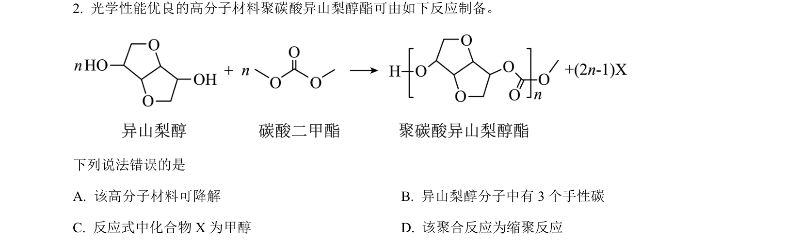
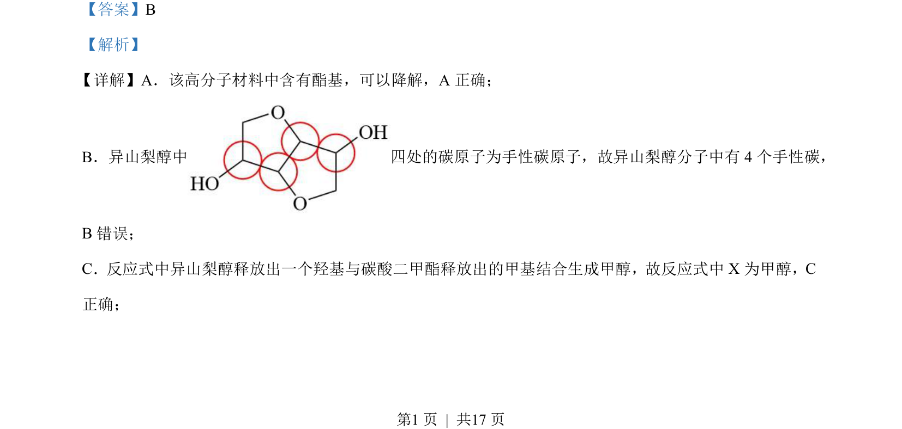
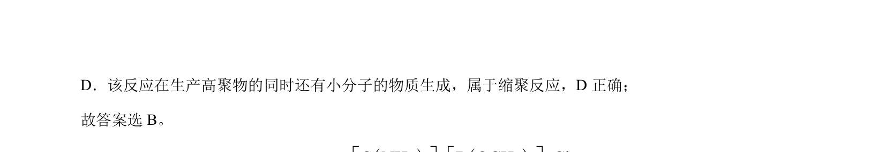

考点：手性碳 缩聚反应 酯基降解

该题考查高分子材料结构与性质，涉及手性碳判断、反应类型及产物分析。


📄 原 PDF 第 1 页：
素材/真题/吉林/2008-2024·（吉林）化学高考真题/2023年高考化学试卷（新课标）（解析卷）.pdf
【答案】B 【解析】 详解】A．该高分子材料中含有酯基，可以降解，A 正确； B．异山梨醇中 四处的碳原子为手性碳原子，故异山梨醇分子中有 4 个手性碳， B错误； C．反应式中异山梨醇释放出一个羟基与碳酸二甲酯释放出的甲基结合生成甲醇，故反应式中X 为甲醇，C 正确； 的 【